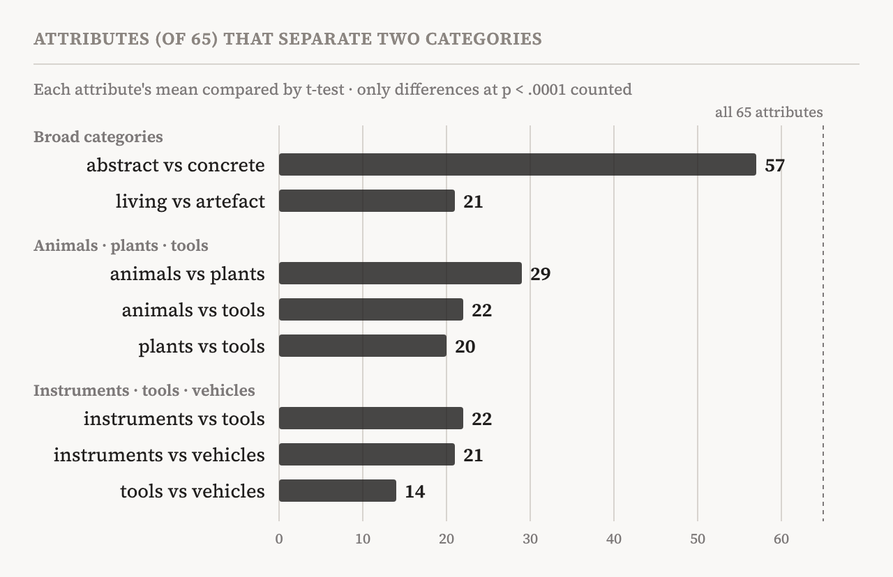
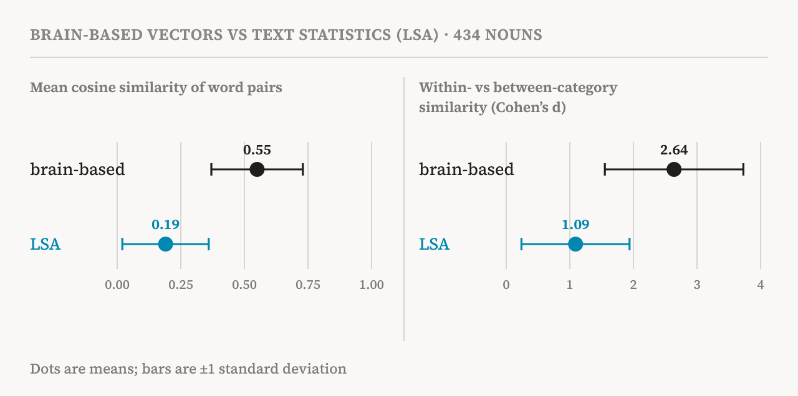
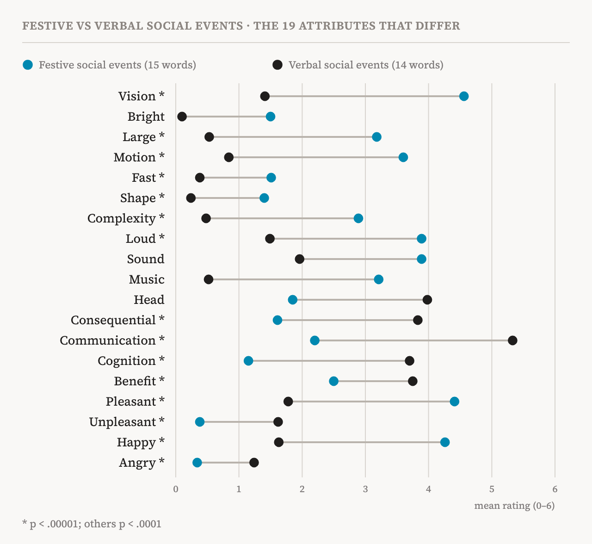
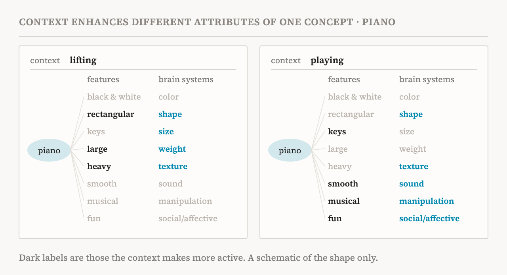
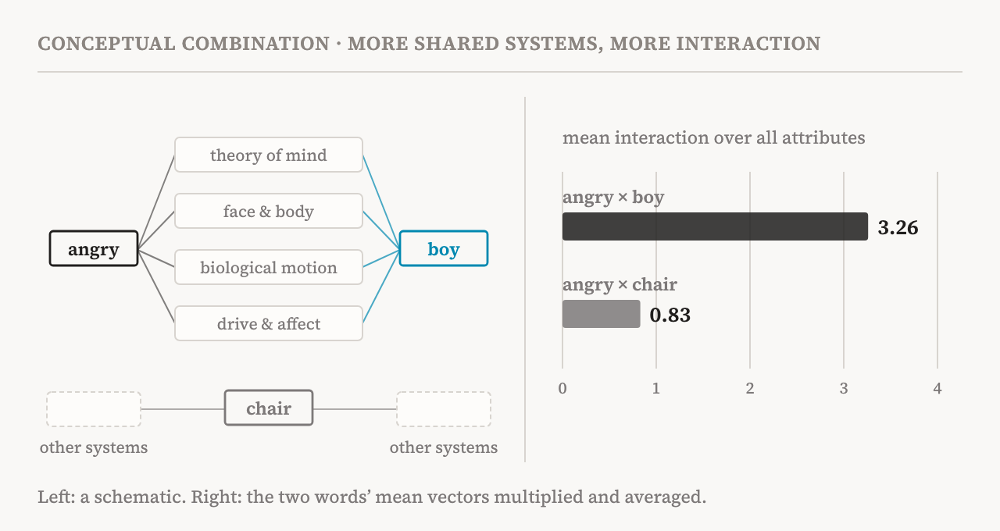

This is Part 2 of a two-part summary of “Toward a brain-based componential semantic representation”, published by Jeffrey R. Binder and colleagues in Cognitive Neuropsychology in 2016. Part 1 is the previous article, “Word Meaning from the Brain's Kinds of Experience, Part 1: 65 Experiential Attributes”. The claims and interpretations are all the authors'. The ‘In plain terms’ boxes are explanations and analogies added to help the reader; they are not in the paper.
Part 1 in brief: the authors propose that the components of concepts should be not verbal features such as ‘wing’ or ‘feather’ but the kinds of experience the brain processes separately, and they chose 65 experiential attributes covering sensory, motor, spatial, temporal, causal, social, cognitive, emotional, drive and attention experience. They then had people rate how strongly each of 535 English words is associated with each attribute, from 0 to 6. The mean of these 65 scores for a word is its attribute vector. Part 2 covers what the authors showed with these vectors, and what answers they think the representation offers to old problems of semantic theory.
Categories differ in the shape of their experience
Averaging over the words in a priori categories gives mean attribute vectors for major semantic categories. The paper's Figures 1 and 2 show circular plots for 12 of the noun categories of Table 4 (animals, humans, plants, musical instruments, tools, vehicles, social events, sounds, weather events, emotions, social constructs and time periods), and Figure 3 for three verb categories (body, locative and social actions). Apart from Path and Social, which marked locative and social actions respectively, the three verb categories evoked a similar set of attributes in different proportions. Ratings for physical adjectives reflected the sensory domain the adjective refers to.
The a priori labels were used to find attributes that differ significantly between categories and so may contribute to mental representations of the distinctions. For each comparison, an unpaired t-test was run on each of the 65 attributes. Because the results are specific to the words that happened to be chosen and may not generalize, and because many contrasts were run, only differences significant at p < .0001 are described.

The first comparison was between the superordinate categories Artefacts (132), Living Things (128) and Abstract Entities (99). Unsurprisingly, Abstract Entities were rated significantly lower than both concrete categories on nearly all sensory attributes. The exceptions were attributes specific to animals and people (Biomotion, Face, Body, Speech, Human), on which Artefacts were as low as or lower than Abstract Entities. Conversely, Abstract Entities were higher on temporal and causal attributes (Time, Duration, Long, Short, Caused, Consequential), social attributes (Social, Communication, Self) and emotional ones (Unpleasant, Sad, Angry, Disgusted, Fearful, Surprised, Drive, Arousal). In all, 57 of the 65 attributes distinguished abstract from concrete entities.
Living Things differed from Artefacts on the attributes characteristic of animals and people, and were also higher on Motion and Slow, suggesting more salient movement, and on several emotional attributes (Angry, Disgusted, Fearful, Surprised), though these were low for both. Artefacts were higher on Large, Landmark and Scene, probably because buildings are over-represented in the sample, and on Temperature, Music (reflecting the many musical instruments), Upper Limb, Practice and several temporal attributes (Time, Duration, Short), though these were lower for both concrete categories than for Abstract Entities. In all, 21 of the 65 attributes distinguished Living Things from Artefacts.
Next came Animals (30), Plants (30) and Tools (27), categories often selectively impaired in patients with category-related semantic deficits. Expected results included higher ratings for Animals on motion attributes; higher ratings for Plants on Taste, Smell and Head, related to their role as food; and higher ratings for Tools and Plants on manipulation (Touch, Upper Limb, Practice). Sound attributes were highest for Animals, intermediate for Tools and virtually zero for Plants. Colour split three ways (Plants > Animals > Tools), and Animals were higher on visual Complexity. In space, Animals had more salient paths (Path) and Tools were rated as closer at hand (Near). Tools were rated as more consequential and more related to social experience, drives and needs. Tools and Plants were seen as more beneficial than Animals, and Plants as more pleasant than Tools. Animals and Tools were both seen as more potentially harmful than Plants, and Animals were higher on Fearful, Surprised, Attention and Arousal, suggesting that animals are viewed as potential threats more than the others. In all, 29 attributes distinguished Animals from Plants, 22 Animals from Tools, and 20 Plants from Tools.
Among artefacts, Musical Instruments (20), Tools (27) and Vehicles (20) were compared. Again there were expected findings: Vehicles were higher on motion attributes (Motion, Biomotion, Fast, Slow, Path, Away), Musical Instruments on sound attributes (Audition, Loud, Low, High, Sound, Music), and Tools on manipulation (Touch, Upper Limb, Practice, Near). The importance of Practice shows in its much higher rating for Tools than for Instruments, whereas the two did not differ on Upper Limb. Size went in the expected direction (Vehicles > Instruments > Tools), and Instruments and Vehicles were higher than Tools on visual Complexity. In more abstract domains, Instruments were higher on Communication (‘a thing or action that people use to communicate’) and Cognition (‘a form of mental activity or function of the mind’), suggesting stronger links to mental activity, and on Pleasant, Happy, Sad, Surprised, Attention and Arousal, suggesting stronger emotional and arousal associations. Tools and Vehicles were higher than Instruments on both Benefit and Harm, and Tools on Needs (‘someone or something that would be hard for you to live without’). In all, 22 attributes distinguished Instruments from Tools, 21 Instruments from Vehicles, and 14 Tools from Vehicles.
The authors note that these differences are intuitively sensible, that many have been reported before, and that they show both the complexity of taxonomic category structure and how the data can be used to explore it.
A comparison with text statistics
The a priori labels also allow a comparison of semantic distance within and between categories. The authors computed pairwise cosine similarity matrices for all 434 nouns, once with the brain-based vectors and once with vectors from latent semantic analysis (LSA) of a large text corpus. The LSA vectors were reduced to 65 dimensions for comparability, though a 300-dimensional LSA representation gave very similar results.
The two matrices were modestly correlated (r = 0.31, p < .00001). Cosine similarity tended to be much higher for the brain-based vectors (mean 0.55, SD 0.18) than for LSA (mean 0.19, SD 0.17; p < .00001). More importantly, similarity was generally greater for pairs in the same category than for pairs across categories, and this difference, measured for each word as Cohen's d, was much larger for the brain-based vectors (mean 2.64, SD 1.09) than for LSA (mean 1.09, SD 0.85; p < .00001). Both kinds of vector capture a priori category structure, the authors conclude, and the brain-based vectors show significantly greater effects of category co-membership.

Categories the data found for themselves
Cosine similarity can also find ‘neighbourhoods’ of semantically close concepts without any labels. The table shows examples (a complete list can be downloaded). The authors take these as further evidence that the representations capture semantic similarity, while noting that direct comparison with similarity judgments and priming data is needed.
| Word | Closest neighbours |
|---|---|
| actor | artist, reporter, priest, journalist, minister, businessman, teacher, boy, editor, diplomat |
| advice | apology, speech, agreement, plea, testimony, satire, wit, truth, analogy, debate |
| airport | jungle, highway, subway, zoo, cathedral, farm, church, theater, store, bar |
| apricot | tangerine, tomato, raspberry, cherry, banana, asparagus, pea, cranberry, cabbage, broccoli |
| arm | hand, finger, shoulder, leg, muscle, foot, eye, jaw, nose, lip |
| army | mob, soldier, judge, policeman, commander, businessman, team, guard, protest, reporter |
| ate | fed, drank, dinner, lived, used, bought, hygiene, opened, worked, barbecue, played |
| avalanche | hailstorm, landslide, volcano, explosion, flood, lightning, cyclone, tornado, hurricane |
| banjo | mandolin, fiddle, accordion, xylophone, harp, drum, piano, clarinet, saxophone, trumpet |
| bee | mosquito, mouse, snake, hawk, cheetah, tiger, chipmunk, crow, bird, ant |
| beer | rum, tea, lemonade, coffee, pie, ham, cheese, mustard, ketchup, jam |
| belch | cough, gasp, scream, squeal, whine, screech, clang, thunder, loud, shouted |
| blue | green, yellow, black, white, dark, red, shiny, ivy, cloud, dandelion |
| book | computer, newspaper, magazine, camera, cash, pen, pencil, hairbrush, keyboard, umbrella |
For a more global view, the authors ran k-means cluster analyses on the mean attribute vectors, varying the number of clusters from 20 to 30 to match the approximate number of categories in Table 4. Results were very similar across this range, and 25–28 clusters gave the most straightforward interpretations; the 28-cluster solution is shown. The authors do not claim this is the ‘true’ number of clusters: conceptual organization is hierarchical, and the number of categories depends on the distinction one wants (animal vs tool, canine vs feline, dog vs wolf, hound vs spaniel). The aim was to match the grain of the clusters to that of the a priori superordinate categories so they could be compared.
| Cluster | n | Cluster | n |
|---|---|---|---|
| Animals | 30 | Verbal social events | 14 |
| Body parts | 13 | Negative natural events | 16 |
| Human types | 7 | Nonverbal sound events | 11 |
| Neutral human roles | 37 | Ingestive events and actions | 5 |
| Violent human roles | 6 | Beneficial abstract entities | 20 |
| Plants and foods | 44 | Neutral abstract entities | 23 |
| Large bright objects | 3 | Causal entities | 19 |
| Non-social places | 22 | Negative emotion entities | 30 |
| Social places | 20 | Positive emotion entities | 22 |
| Tools and furniture | 43 | Time concepts | 16 |
| Musical instruments | 23 | Locative change actions | 14 |
| Loud vehicles | 6 | Neutral actions | 23 |
| Quiet vehicles | 18 | Negative actions and properties | 16 |
| Festive social events | 15 | Sensory properties | 19 |
Several clusters closely matched a priori categories: all 30 Animals clustered together, as did 13 of the 14 Body Parts and all 20 Musical Instruments. One body part (hair) fell in the Tools and Furniture cluster, and three other sound-producing artefacts (megaphone, television, cellphone) joined the Musical Instruments. The ratings did not separate edible Plants from Manufactured Foods, collapsing them into one Foods cluster that excluded larger inedible plants (elm, ivy, oak, tree). Nor did they separate Furniture from Tools, which formed one cluster with most of the miscellaneous manipulated artefacts (book, door, computer, magazine, medicine, newspaper, ticket, window) and several small non-artefacts (feather, hair, ice, stone).
The clustering also found plausible divisions within categories. Basic human types (woman, man, child) separated from occupational roles, and people with negative or violent associations formed their own cluster. Compared with neutral occupational roles, human types were rated significantly higher on sensory attributes (Shape, Complexity, Touch, Temperature, Texture, High, Sound, Smell), nearness (Near, Self) and positive emotion (Happy): Near, for example, was 2.91 against 0.84, and Happy 3.50 against 1.76. Places split into two groups the authors called Non-Social and Social, roughly matching Natural Scenes and Places/Buildings, except that the non-social cluster included several man-made places (apartment, fence, bridge, street). Social places were higher on attributes of human interaction (Social, 3.31 against 0.84; Communication; Consequential), and non-social places on several sensory attributes (Colour, Pattern, Shape, Touch, Texture). Besides separating vehicles from other artefacts, the clustering separated loud from quiet vehicles (mean Loud 5.30 vs 1.96); loud vehicles were also higher on other auditory attributes (Audition, High, Sound). The two vehicle clusters held four unexpected items (fireworks, fountain, river, soccer), probably because of high ratings on Motion and Path, which distinguish vehicles from other non-living things.
Among event nouns, the a priori Social Events split into clusters the authors called Festive Social Events and Verbal Social Events. Festive events were significantly higher on sensory attributes of visual shape, visual motion and sound, and were rated more Pleasant and Happy; verbal events were higher on attributes of human cognition (Communication, Cognition, Consequential) and, interestingly, were rated both more Unpleasant and more Beneficial than festive events. A Negative Natural Events cluster roughly matched Weather Events, with some non-meteorological negative or violent events added (explosion, stampede, battle). A Nonverbal Sound Events cluster matched the category of the same name. A small cluster of Ingestive Events and Actions joined several social events with verbs of ingestion, linked by high ratings on Taste, Smell, Upper Limb, Head, Toward, Pleasant, Benefit and Needs.

For abstract nouns the match between clusters and a priori categories was less clear. Two clusters of abstract and mental constructs, labelled Beneficial and Neutral, were mainly distinguished by perceived benefit and positive emotion: beneficial ones were higher on Benefit (4.68 against 2.31), Self, Pleasant, Happy, Drive, Needs, Arousal and others. A Causal Entities cluster had high ratings on Consequential (4.47 against 2.22) and Social. Two further clusters held abstract entities with strong negative and positive emotional meaning: negative emotion entities were higher on Dark, Pain, Consequential, Harm, Unpleasant, Sad, Angry, Disgusted, Fearful, positive ones on Vision, Bright, Music, Self, Benefit, Pleasant, Happy, Needs. The last abstract cluster roughly matched Time Periods but also included properties (new, old, young) and verbs (grew, slept) associated with duration.
Three clusters were mainly verbs. Locative Change Actions closely matched the a priori category and was defined by high ratings on motion through space (Path 5.10 against 2.05, Lower Limb 3.86 against 1.11). The second mixed emotionally neutral physical and social actions, and the third mixed verbs and adjectives with negative or violent associations. The final cluster was almost entirely adjectives of physical sensory properties: colour, surface appearance, tactile texture, temperature and weight.
Hierarchical clustering
A hierarchical cluster analysis of the 335 concrete nouns (objects and events) showed the major categories clearly, with interesting subdivisions. Musical Instruments split into instruments played by blowing and instruments played with the upper limbs only, the latter with a somewhat separate group played by striking; piano formed its own branch, probably because of its higher Lower Limb rating. People formed a cluster with subgroups of ‘private sector’ occupations, ‘public sector’ occupations, basic human types, and people with negative or violent associations.
Animals also formed a cluster, though two (ant and butterfly) sat apart on nearby branches. They divided into aquatic animals, small land animals, large animals and unpleasant animals (the group with alligator). Interestingly, camel and horse, the only animals in the set used for human transport, grouped together, although no attribute encodes ‘used for human transportation’. Their vectors showed higher Lower Limb and Benefit ratings than the other animals; association with leg movement and benefit to people, the authors suggest, seems enough to mark an animal as useful for transport. Plants and Foods formed a large branch with subgroups of beverages, fruits, manufactured foods, vegetables and flowers.
The same analysis of the 99 abstract nouns gave three major branches. The largest held concepts with neutral or positive meaning, including a subgroup of positive or beneficial entities (attribute to gratitude), a fairly distinct subgroup of ‘causal’ concepts with likely consequences (motive to fate), and a subgroup of concepts of number or quantification (noun to infinity), along with pairs (advice/apology, treaty/truce) and a triad (irony/paradox/mystery) of similar meaning. The second branch held concepts of harm or other negative meaning: negative emotions (guilt to dread), social situations associated with anger (snub to grievance), a triad of difficulty or misfortune (sin/curse/problem) and a triad of error or misjudgment (fallacy/folly/denial). The last branch held time periods (day, morning, summer, spring, evening, night, winter).
Word frequency, imageability and word form
Word frequency roughly indicates how frequent and significant a concept is, so the authors predicted correlations with attributes of proximity and self-needs. Imageability roughly indicates the overall salience of sensory, especially visual, attributes, so they predicted correlations with sensory and motor attributes. An alpha of .00001 (r = .1673) was used to limit family-wise error.
Word frequency correlated positively with Near, Self, Benefit, Drive and Needs, consistent with frequency reflecting the proximity and survival significance of concepts, and with attributes characteristic of people (Face, Body, Speech, Human), reflecting the proximity and significance of conspecifics. It correlated negatively with many sensory attributes: Colour, Pattern, Small, Shape, Temperature, Texture, Weight, Audition, Loud, Low, High, Sound, Music and Taste. One possible explanation is that some natural categories with very salient perceptual features, particularly animals, plants and musical instruments, are far less salient in everyday experience and language use.
As expected, most sensory and motor attributes correlated positively with imageability (p < .00001): Vision, Bright, Dark, Colour, Pattern, Large, Small, Motion, Biomotion, Fast, Slow, Shape, Complexity, Touch, Temperature, Weight, Loud, Low, High, Sound, Taste, Smell, Upper Limb and Practice, as did the visual–spatial attributes Landmark, Scene, Near and Toward. Many non-perceptual attributes correlated negatively: temporal and causal (Duration, Long, Short, Caused, Consequential), social and cognitive (Social, Human, Communication, Self, Cognition) and affective and arousal attributes (Unpleasant, Sad, Angry, Disgusted, Fearful, Surprised, Drive, Arousal).
The size of the data set also allowed a search for unanticipated links between semantic attributes and non-semantic lexical variables. Earlier work found phonological correlates of meaning and word class, suggesting that word forms are not entirely arbitrary but partly shaped by meaning and pragmatics. In an exploratory analysis, the 65 attributes were correlated with length (number of phonemes), orthographic typicality (mean position-constrained bigram frequency, orthographic neighbourhood size) and phonological typicality (phonological neighbourhood size), again at an alpha of .00001 to focus on very strong effects likely to hold in other samples.
Word length correlated negatively with Near and Needs, with a strong trend (p < .0001) for Practice: shorter words are used for things near us, central to our needs and often handled. Orthographic neighbourhood size correlated positively with Near, Needs and Practice, with strong trends for Touch and Self, and phonological neighbourhood size with Near and Practice, with strong trends for Needs and Touch. Together these suggest that concepts of nearby objects significant to our needs tend to have shorter or simpler morphemes with commonly shared spelling patterns. Position-constrained bigram frequency correlated with no attribute, suggesting that semantic variables mainly influence segments larger than letter pairs.
Uses: brain imaging and category-specific deficits
The intent of the study, the authors write, was to outline a relatively comprehensive brain-based componential model of meaning and explore its properties. Building on earlier work, they extended the representation to many sensory and motor subdomains, more complex physical domains (space, time) and mental experiences, on the principle that all aspects of experience are encoded in the brain and processed according to their information content. The representation's usefulness depends on its completeness and accuracy, which depend in turn on the attributes chosen and the queries used; these choices are almost certainly imperfect, and the authors regard the work as a preliminary exploration they hope will lead to improvements.
Because the scheme comes from a theory of concept representation in the brain, its main use, and its main validation, will probably be in brain research. A study by Fernandino and colleagues (2015) shows one kind of application. They had 900 noun concepts rated on 5 attributes (Colour, Visual Motion, Shape, Sound and Manipulation); fMRI while participants read the words and judged concreteness showed distinct networks modulated by the salience of each attribute, and multi-level convergence areas responding to several or all of them. Future studies could take in a much broader range of information within and beyond the senses.
Another likely use is the study of category-related semantic deficits after brain damage, in which patients differ in their ability to process concepts from broad (living vs artefact) or narrower (animal, tool, plant, body part, musical instrument) categories. The embodiment account holds that categories differ systematically in the kind of sensory–motor knowledge they depend on: living things are said to have more salient visual attributes, tools and other artefacts more salient action attributes. As Gainotti discussed, greater impairment for living things is typically associated with damage to the anterior ventral temporal lobe, which supports high-level visual object perception, and greater impairment for tools with frontoparietal damage, which supports object-directed action. But there are counterexamples: patients with high-level visual deficits and no selective living-thing impairment, and patients with apparently normal vision but a selective living-thing impairment.
The authors say their data support more recent proposals that category distinctions can arise from much more complex combinations of attributes. As the comparisons in Fig. 1 illustrate, concrete categories differ across many domains: specific visual subsystems (visual motion, biological motion, face perception), senses other than vision (sound, taste, smell), affective and arousal associations, spatial attributes and social cognition. Damage to any of these systems, or to spatially close combinations of them, could explain differential category impairments; the association between living-thing impairment and anterior ventral temporal damage, for example, may reflect damage not to high-level visual knowledge as such but to a zone where high-level visual, taste, smell and affective systems converge. The data also clarify the diagnostic attribute make-up of salient categories that have not received systematic neuropsychological attention, such as foods, musical instruments, vehicles, human roles, places, events, time concepts, locative change actions and social actions; each is defined by its own subset of especially salient attributes, so damage affecting knowledge of those attributes could produce a matching category-specific impairment. Several new distinctions came from the clustering: social and non-social places, verbal and festive social events, and three other event types (negative, sound and ingestive). These probably reflect quirks of the word sample to some degree, the authors note, but raise intriguing possibilities for studies with a wider range of concepts.
Choosing features and weighting them
Beyond empirical neuroscience, the authors argue, a brain-based componential representation may offer different answers to some longstanding theoretical problems.
The first is feature selection: what counts as a feature, and how can the set of features be identified? Verbal feature theories face the problem that possible object and action features are extremely numerous. The authors take a fundamentally different approach: the content of a concept is not the set of verbal features people associate with it but the set of neural processing modalities (representation classes) engaged when experiencing instances of it. This allows direct correspondences between conceptual content and neural representation, which verbal feature sets allow only post hoc, by mapping features to processing modalities. Defining content by brain systems gives a closed and relatively small set of basic components. Whether they can capture fine distinctions of meaning is not yet clear, but the assumption that conceptual knowledge is distributed across modality-specific systems offers a potential solution to the old problem of feature selection.
The second is feature weighting. As Murphy and Medin put it, a zebra and a barber pole could be close neighbours if ‘has stripes’ were given enough weight. The same feature can also be critical for one concept and irrelevant for another. Keil's example: polar bears and washing machines are both typically white, yet something identical to a polar bear except in colour is probably not a polar bear, while something identical to a washing machine is still one whatever its colour. Whether ‘is white’ matters depends on the other properties, so no single weight always works. And in feature listing, people neglect some features: listing properties of dogs, they rarely say ‘has blood’, ‘can move’, ‘has DNA’ or ‘can reproduce’, though these are central to the concept of an animal.
The authors' theory weights attributes by statistical regularity. If polar bears are always experienced as white, colour becomes a strongly weighted attribute of polar bears; it would be one for washing machines too if they really were nearly always white, but washing machines and most other artefacts come in many colours, so colour weighs less for them. A few artefacts are counter-examples: stop signs are always red, so a sign that is not red is a poor stop sign even if it says ‘Stop’, and school buses are virtually always yellow, so a grey, black or green bus is unlikely to be called a school bus. Semantic similarity is determined by overall similarity across all attributes, not by one. Barber poles and zebras both have salient visual patterns but differ strongly on many other attributes (shape complexity, biological motion, body parts, motion through space), which keeps them from being considered similar.
In this theory the weights come directly from people, as averaged salience ratings. Asking for a continuous rating on every attribute, instead of a list of the most salient ones, avoids the attentional and pragmatic biases that leave feature lists incomplete, and the resulting attributes are graded rather than binary, so they carry their weights inherently. The paper's Figure 11 shows the vectors for egg, bicycle and agreement. As inanimate objects, egg and bicycle share low weights on human-related attributes (biological motion, face, body part, speech, social, communication, emotion and cognition), auditory attributes and temporal attributes. They differ in expected ways: egg weighs more on brightness, colour, small size, texture, weight, taste, smell and head actions, bicycle on motion, fast motion, visual complexity, lower limb actions and path.
Abstract concepts
It is not obvious how embodiment theories handle concepts not reliably tied to sensory–motor structure: justice and piety, for which people struggle to list reliable features and whose instances share no obvious structure, but also more concrete concepts whose relevant structure is not in perception or action. Social categories are an example: male covers grossly different things (infant, child and elderly human males, or the males of any plant or animal species, which resemble the females of their species more than the males of other species); Catholic and Protestant do not seem to reside in sensory–motor structure; and pauper, liar and idiot organize social interaction and inference but refer to economic circumstances, behaviours and mental dispositions not obviously reflected in the perceptual and motor structure of the environment.
Many authors have discussed the experiential content and acquisition of abstract concepts. Abstract concepts span many experiential domains (spatial, temporal, social, affective, cognitive) and are not a homogeneous set, but many are learned through experience with complex situations and events, which, as Barsalou points out, often include multiple agents, physical events and mental events. Concrete concepts typically refer to a single component (an object or action) of a situation. Both are learned through experience, but abstract concepts differ in how their content is distributed over entities, space and time; they seem ‘abstract’ because their content is spread across several components of situations.
Another aspect is that the content of many abstract concepts refers to mental rather than sensory–motor experience: cognitive events or states (think, believe, know, doubt, reason) or products of cognition (concept, theory, idea, whim). Abstract concepts also tend to have stronger affective content than concrete ones, which may explain why many imaging studies find them engaging anterior temporal regions more; many refer directly to affective states or qualities (anger, fear, sad, happy, disgust). A crucial feature distinguishing this theory from some other embodiment theories is that cognitive and affective mental experiences count every bit as much as sensory–motor experiences in grounding conceptual knowledge. Experiencing an affective or cognitive state is like experiencing a sensory–motor event except that the object of perception is internal. This expanded notion of embodied experience adds considerably to the representation's descriptive power, especially for abstract concepts.
A prominent way the model represents abstract concepts is through attributes coding social knowledge. Social cognition research has identified neural systems that seem selectively involved in theory of mind, ‘self’ representation and social concepts, and many abstract words are social concepts (cooperate, justice, liar, promise, trust) or have salient social content. In the paper's Figure 11, agreement is generally low on sensory–motor attributes compared with egg and bicycle but much higher on social cognition attributes (Caused, Consequential, Social, Human, Communication), on several temporal attributes (Duration, Long) and on Cognition. Its high Benefit rating and small but clearly non-zero head action rating might also help distinguish agreement from many abstract concepts not associated with benefit or with actions of the face and head.
The authors stress that while such examples show abstract concepts tied to particular mental, affective and social experiences, they do not deny that language plays a large role in learning them. Language provides a rich system of abstract symbols that efficiently ‘point to’ complex combinations of external and internal events, letting new abstract concepts be learned by association with older ones. In the end, though, abstract concepts, like all concepts, must be grounded in experience, even if that experience is very complex, spread out in space and time, and made largely of internal mental events.
Context and ad hoc categories
The importance given to particular attributes of a concept varies with context. When moving a piano its weight matters more than its function, so the piano seems more like a couch than a guitar; when listening to a band its function matters more, so it seems more like a guitar (Barsalou). Componential approaches assume context can control the weight given to feature dimensions, but the mechanism is unclear. Learning different weightings for different contexts has been explored in simple category learning, but whether it scales to real semantic cognition is questionable, and it seems ill-suited to the flexibility with which people create new categories on the spot.
The authors propose that activation of attribute representations is modulated continuously by two mechanisms: top-down attention, and interaction with the attributes of the context itself. The context draws attention to relevant attributes. When lifting a piano, attention goes to action and proprioceptive processing, enhancing those attributes of the piano; when playing or listening to music, attention shifts to a different subset, enhancing it instead.

Beyond attention, the distributed representation of the target (piano) may interact directly with that of the context: the concept of lifting is partly encoded in action and proprioceptive systems that overlap with those encoding piano, and the authors propose that overlapping representations of two or more concepts enhance their overlapping components. Enhancing context-relevant attributes changes the relative similarity between concepts, as in the piano–couch–guitar example, and can produce purely functional groupings (things one can stand on to reach the top shelf), ‘ad hoc categories’. The account gives a partial mechanism for them: ad hoc categories form when concepts share the same context-related attribute enhancement.
Conceptual combination
Language use depends on productively combining concepts into more specific or complex ones: red jacket (modifier–noun), ski jacket (noun–noun), the dog ran (subject–verb), hit the ball (verb–object). The authors first define what a neural theory of combination should address. One issue is the general mechanism by which representations interact, which should explain how new meanings ‘emerge’ from concepts with very different meanings: house has few features in common with boat, yet house boat is a meaningful, distinct concept. Another is the factors that change how features interact: house boat and boat house have the same constituents but entirely different meanings, so constituent role (modifier or head) is a major factor, and specific semantic factors matter too (a cancer therapy is a therapy for cancer, but a water therapy is not a therapy for water). The task of a semantic theory, in their view, is not to list every combination but to propose general principles governing the underlying processes.
As an illustration, the authors take animacy, a well-recognized determinant of whether modifier–noun and noun–verb combinations are meaningful (and of pronoun choice, word order and aspects of morphology). Standard verbal feature models and linguistic semantic models treat animacy as a binary feature. The difference between ‘the angry boy’ and ‘*the angry chair’ is ‘explained’ by a rule that angry requires an animate argument, and the difference between ‘the boy planned’ and ‘*the chair planned’ by a rule that plan does. The weakness of this approach is that it amounts to a very long list of specific rules that restate the observations. It does not explain why particular concepts ‘require’ animate arguments, or why particular concepts are animate, or the well-established ‘animacy hierarchy’ within and across languages (adult humans above infants and some animals, then lower animals, plants, non-living objects and abstract categories), which strongly suggests that animacy is a graded continuum.
From a developmental and neurobiological perspective, knowledge of animacy reflects a combination of experiences: perceiving biological motion, perceiving causality, perceiving one's own affective and drive states, and developing theory of mind. Biological motion lets us recognize things that move under their own power: non-mechanical movements of higher-order complexity, seen in other things and in our own movements, give rise to the understanding (possibly mediated by ‘mirror’ neurons) that such movements are executed by the mover itself. Perceiving causality, from simple collisions and applied forces to multimodal, higher-order events, grounds understanding of how biological movements can cause change. Perceiving internal drive states, and the events that satisfy them, grounds understanding of how living agents with needs cause change. Together with recognizing that other living things act to meet their own needs, this grounds theory of mind. On this account animacy, far from being a binary symbolic property, arises from complex, interacting sensory, motor, affective and cognitive experiences.
The authors propose that two concepts interact when they activate a similar set of modal networks, and less when their attributes overlap less. A noun that engages biological motion, face and body part, affective and social cognition networks (boy) will interact more extensively with a modifier that also activates them (angry) than will a noun that does not (chair).

To show that even a simple multiplicative interaction can produce such differences, they multiplied the mean attribute vectors of modifier–noun pairs of varying meaningfulness. Boy and angry interacted as expected, with enhanced values for biological motion, face and body part perception, speech production and social and human characteristics, whereas chair and angry interacted negligibly. Averaged over all attributes, the interaction was 3.26 for angry×boy and 0.83 for angry×chair. Averaged over 116 nouns in 8 taxonomic categories, the values roughly approximated the animacy hierarchy: strong for nouns referring to people (boy, girl, man, woman, family, couple) and human occupations (doctor, lawyer, politician, teacher), much weaker for animals, and weakest for plants. Interactions were higher for human concepts than for any non-human category (all p < .001).
The general principle the authors draw is that concepts acquired within similar neural processing domains are more likely to have similar semantic structures that allow combination. They interpret ‘animacy’ as a verbal label summarizing a particular pattern of attribute weightings rather than an a priori binary feature: a common structure of shared ‘human-related’ attributes lets certain concepts be meaningfully combined. A chair cannot be angry because chairs do not have the movements, faces or minds essential for feeling and expressing anger, and the same applies to every concept lacking these attributes. A comprehensive attribute representation constrained by neurobiological and developmental data could thus give a first-principles account of why concepts vary in animacy, and a way of predicting which concepts should ‘require’ animate arguments.
Similar principles might apply in other difficult cases. The difference between cancer therapy and water therapy is probably due to cancer being negatively valenced while water and therapy are usually thought beneficial, which yields different constituent relations (therapy for vs therapy with). Likewise a lake house is a house at a lake, but a dog house is not a house at a dog, because houses and lakes have fixed locations (they do not move and can serve as landmarks) while dogs do not. The meaning of a combination is strongly determined by attribute congruence: when concepts A and B have opposite congruency relations with concept C, AC and BC are likely to capture very different constituent relationships, whose content reflects the attribute structure of the constituents, as the locative relation ‘located at’ arises in lake house but not dog house.
At the neural level, combination probably takes the form of additional processing in systems where attribute representations overlap; this computes the ‘new’ representations resulting from the combination, which tend to have added salience. Consider dog after brown or after loud: brown leaves residual activation in the colour processor, and its interaction with the colour representation of dog causes additional computation there; loud does the same in the auditory processor. A similar mechanism, along with attention, is proposed for situational context effects, because the context situation also has a conceptual representation: the attributes of the target ‘relevant’ to the context are those that overlap with the context's representation. Seen this way, context effects (lifting vs playing a piano) are a special case of conceptual combination.
Scope and limits of the theory
The authors summarize their work as a systematic attempt to relate semantic content to large-scale brain networks and biologically plausible accounts of concept acquisition. It offers possible solutions to longstanding problems, particularly feature selection, feature weighting and specifying the content of abstract words. Its main aim is to understand lexical semantic representation in the brain better and, specifically, to build a more comprehensive theory of conceptual grounding that covers the full range of human experience.
They have proposed general mechanisms for context and combination effects, but say much more work is needed on word combinations and syntactic effects on meaning. Their attribute account of why lake house yields ‘located at’, for instance, does not explain why house lake fails, though both nouns have fixed locations. A plausible explanation is that the syntactic roles of the constituents set up a head–modifier = ground–figure correspondence that requires the modifier concept to be larger than the head noun concept; in principle this could be captured by combining the nouns' size ratings with their syntactic roles. Earlier studies show such effects vary widely in the relations that arise between constituents and the ‘rules’ governing them, and the authors assume many other attributes could be involved in similar interactions.
The explanatory power of a model that refers only to ‘types of experience’, without every verbally generated feature, is still unknown. It is far from clear, for example, that it can capture an intuitively basic distinction like male/female. The model proposes that male and female, applied to human adults, can be distinguished by sensory, affective and social experiences without specific encyclopaedic features. But the account seems to fail when male and female apply to animals, plants or electronic connectors, where there is little or no overlap in the associated experiences that could explain what is male or female about all of them. Such cases, the authors write, show that much conceptual knowledge is learned directly through language, with only very indirect grounding in experience. Like other embodied cognition theories, though, their model holds that all concepts are ultimately grounded in experience, directly or indirectly through language that refers to experience. Establishing the validity, usefulness and limits of this principle will require further study.
Conclusion
The paper proposes dividing word meaning not into verbal features but into the kinds of experience the brain processes separately. The authors chose 65 experiential attributes on neurobiological grounds, covering sensory, motor, spatial, temporal, causal, social, cognitive, emotional, drive and attention experience, and collected ratings for 535 English nouns, verbs and adjectives.
The resulting vectors separated a priori categories across many attributes (57 attributes for abstract vs concrete), showed a much larger difference between within- and between-category similarity than LSA vectors from text statistics (Cohen's d 2.64 vs 1.09), and, clustered on their own, revealed new distinctions such as social and non-social places and festive and verbal events. The authors see the representation as offering different answers to old problems of semantic theory, such as feature selection and weighting, abstract concepts, context effects and conceptual combination, while stating that their choice of attributes and queries is surely imperfect, that the work is a preliminary exploration, and that much conceptual knowledge is grounded in experience only very indirectly, through language.